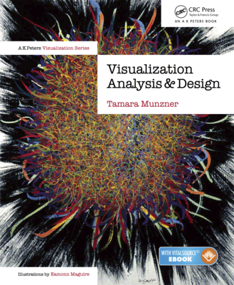
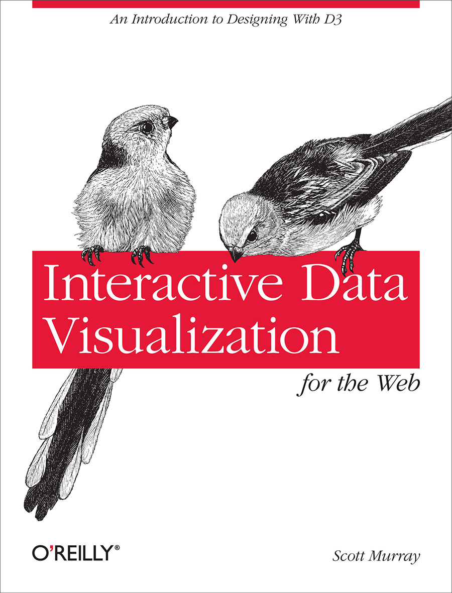

| Percentage | What to do | Notes | |
| Project 1: | 26% | Time series visualization | Individual project |
| Project 2: | 30% | Geospatial visualization | Group project (teammates are assigned by instructor) |
| Project 3: | 30% | Network visualization | Group project (teammates are selected by students) |
| Peer evaluation: | 4% | Feeback from teammates | for Project 2 and 3 |
| Class Participation: | 10% | Comments/Ask questions | Don't ask trivial questions. Max +2/day. Can contribute via piazza One contribution is 0.5% |
| Topics | |
| Week 1: 1/17 | - Course overview - Project 1 is out |
| Week 2: 1/22 - 1/24 | - Introduction to Visualization - Information Visualization vs. Visual Analytics |
| Week 3: 1/29 - 1/31 | - Introduction to Javascript - Introduction to D3.js |
| Week 4: 2/5 - 2/7 | - More introduction to D3.js - Time series visualizations |
| Week 5: 2/12 - 2/14 | - Tables and Charts - Scatterplots and Paralell Coordinates |
| Week 6: 2/19 - 2/21 | - Text visualization - Project 1 is due at 11:59pm Sunday, 2/17 |
| Week 7: 2/26 - 2/28 | - Project 1 presentations - Project 2 is out => Team assigment |
| Week 8: 3/5 - 3/7 | - Project 1 review, lessons learned - Arcs diagrams |
| Week 9: 3/12 - 3/14 | - Spring Break |
| Week 10: 3/19 - 3/21 | - Geospatial Visualization - Tree layouts |
| Week 11: 3/26 - 3/28 | - Hierarchical edge bundling - Project 2 code is due at 11:59pm Sunday, 3/24 |
| Week 12: 4/2 - 4/4 | - Project 2 presentations - Project 2 report and peer review are due at 11:59pm Sunday, 3/31 |
| Week 13: 4/9 - 4/11 | - Project 3 is out => Team formation - Network visualization |
| Week 14: 4/16 - 4/18 |
- Force-directed layouts in D3 - Adjacency matrices |
| Week 15: 4/23 - 4/25 | - Dynamic network visualization - Visualizing Uncertainty |
| Week 16: 4/30 - 5/2 | - Project 3 code is due at 11:59pm Tuesday, 4/30 - Project 3 report and peer review are due at 11:59pm Sunday, 5/5 |
| Week 17: 5/7 | - Project 3 presentations |
|  | Visualization Analysis and Design by Tamara Munzner CRC Press, 2014 ISBN: 978-1466508910 $75 hardcover |
 | Interactive Data Visualization for the Web by Scott Murray O'Reilly, 2013 ISBNL 978-1449339739 available for free online |